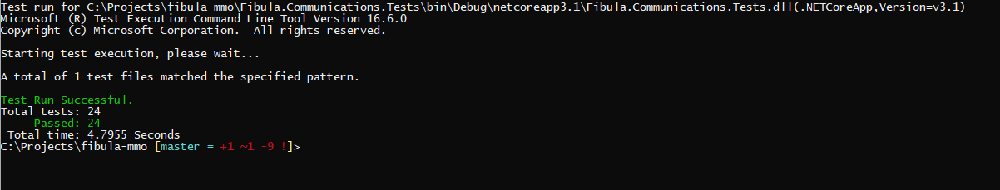
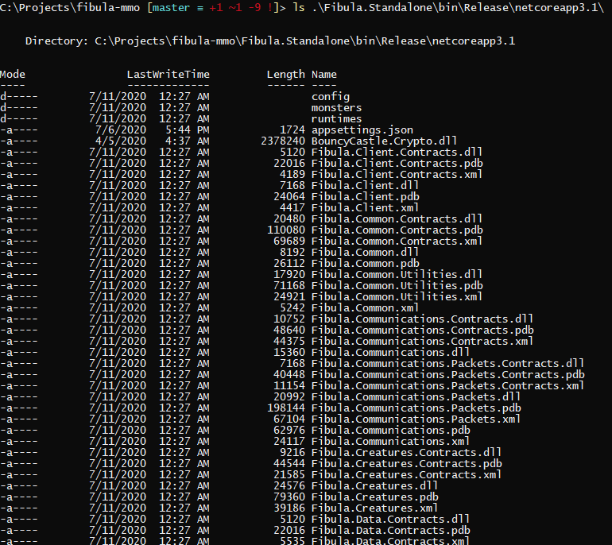
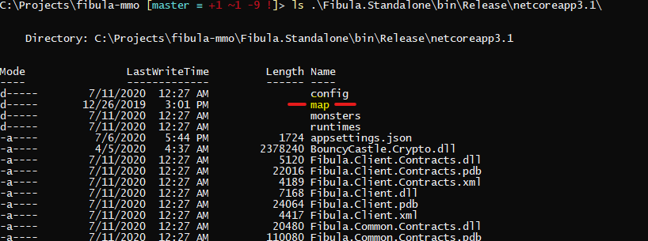
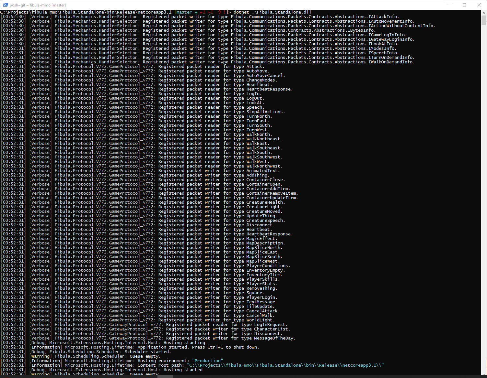

How to setup and run the service:
1) Clone using Git
Open your command prompt window with Git support installed.
Use Git to clone this repo:
git clone https://github.com/jlnunez89/fibula-mmo.gitThe resulting folder will contain this structure (or similar):

2) Build the solution
You have some options to do this, but you'll need to:
Install .NetCore SDK 3.X from https://dotnet.microsoft.com/download.
Use Visual Studio (the included solution is for 2019 Community edition) OR
Using a command line interface to build:
dotnet build --configuration Release

NOTE: You can run tests for the solution by running the command:
dotnet testThat being said, there are not very many tests at the time of writing... help write some!

After you build it, the project you want to focus on is
Fibula.Standalone. Go into the bin folder created, and it should look something like this:
3) Extract the Map sector files.
These take a lot of space uncompressed, so I only included them as a zipped archive.
Look for the file named
map.zipin the main repository folder.Decompress the archive into the
Fibula.Standalone/bin/Release/netcoreapp3.1folder you just inspected:
4) Run the binary:
Running the server is simple:
From within the
Fibula.Standalone/bin/Release/netcoreapp3.1folder, execute dotnet on the standalone's DLL:dotnet .\Fibula.Standalone.dll
This server engine is designed to only load the sector files surronding players as they approach them, making it start really fast and requiring just a few memory- currently hovering around ~60 MB so far. This will change of course, as we switch to a non in-memory database, add more assets loading and pre-checks.
What's that? You don't see [Verbose] stuff when you run yours? That's by design! Go to configuration after this if you want to fiddle with that kind of thing.
5) Log in:
Use you favorite
7.72**client to connnect tolocalhost/127.0.0.1(per vanilla configuration). In my case, I'm just using OTLand's IP Changer with a vanilla client:
** Or whatever version you're running! At the time of writing, 7.72 is the default version that's selected as the project builds.
- Use the credentials for the In-Memory database:
| Account Number: | 1 |
| Password: | 1 |
These are currently seeded during the in-memory database model creation OnModelCreating method: Fibula.Data.InMemoryDatabase\FibulaInMemoryDatabaseContext.cs